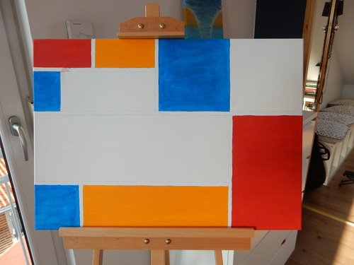

Welcome to my site. I my flexi type I relax while painting in oil. I started practicing in 2016. Mainly I use Talents colours and use faber castel penciles and pastel charlc to prepare my art. Paperwise I only use high quality standards. My Canvas is normally prepared with 3 layers of Gesso
featured work
dr painting style
This is a oil painting 24x18 cm sized on canvas with dry technique
which I started in sommer 2017 and completed in winder 2017
Dry painting technique oil and acryl
One of my first on canvas 24x18 cm based on oil and acrly. The basic was the just the coloured corner, but after i have created the green ball I adjusted this one with a red ball to enrich my technique.
Learning Piet Mondrian style
Insired by Piet Mondrian I started a 70x50 cm painting in Oil. I started that project in 2017 and plan to comppete this early 2019 due to the fact that it tooks 2 month per lyer to dry. The canvas was prepared 3 times with geso in order to have a smooth ground for the oil color. I paint "mager" to "fett".